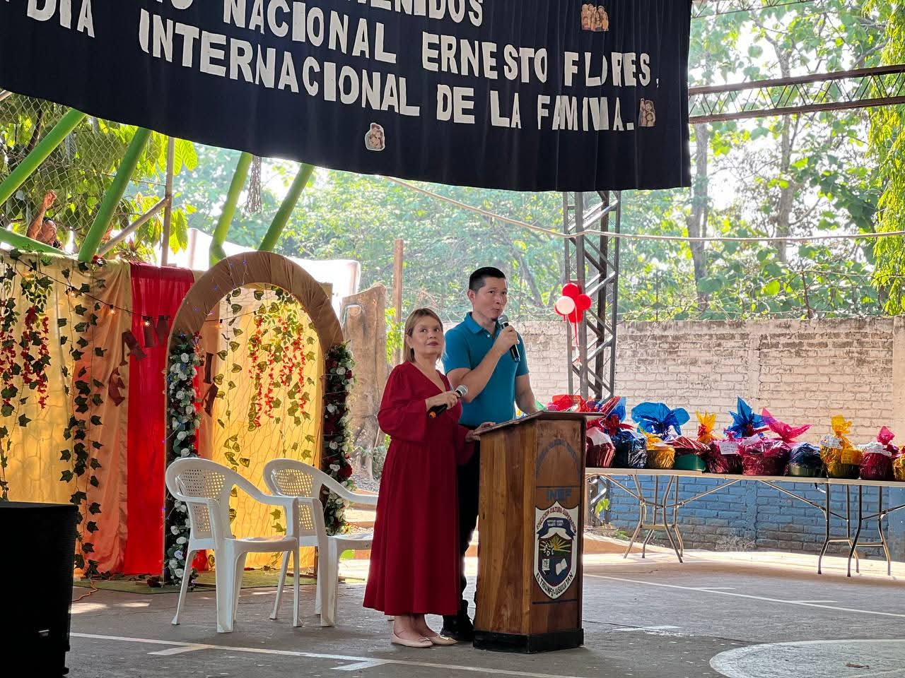
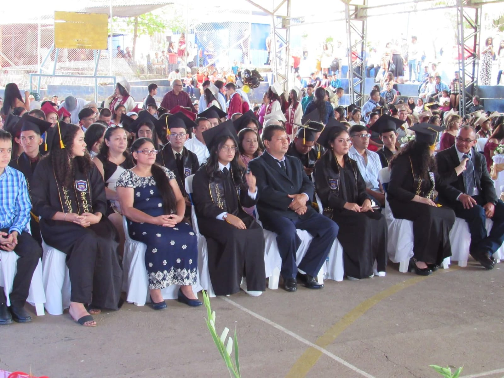

Actos Cívicos y Culturales
Celebraciones patrias, desfiles, elección de soberanas y eventos institucionales con participación de todo el alumnado.

Promociones y Graduaciones
Reconocimiento al esfuerzo de nuestros estudiantes que culminan exitosamente sus etapas académicas y técnicas.
